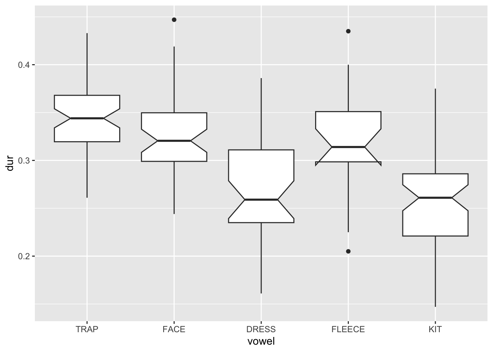

Students perform an ANOVA analysis and interpret the results.
What’s in a name?
ANOVA stands for Analysis of Variance. It’s very much like the t-test and Wilcoxon test, but with three or more levels (aka. groups) in the categorical variable.
t-test or Wilcoxon test
ANOVA
old v. young
old v. middle age v. young
women v. men
women v. men. v. kids
Mandarin v. Cantonese
Mandarin v. Cantonese v. Wu v. Hokkien v. Gan v. Hunanese
An ANOVA calculates an F statistic which, at a high level is calculated with the following formula:
Notch went outside hinges
ℹ Do you want `notch = FALSE`?

Those notches are trying to tell a story, amirite?!
Let’s see what an ANOVA says:
front_vowels %>%aov(dur~vowel, data = .) -> resultsummary(result)
Df Sum Sq Mean Sq F value Pr(>F)
vowel 4 0.2875 0.07188 31.23 <2e-16 ***
Residuals 211 0.4856 0.00230
---
Signif. codes: 0 '***' 0.001 '**' 0.01 '*' 0.05 '.' 0.1 ' ' 1
Okay, the ANOVA feels that there is something goin’ on here. Just look at that p-value well below 0.05. But, the immediate follow-up question is which groups are significantly different from other groups.
Enter the post-hoc test. Actually, there are quite a few post-hoc test, but we’ll use the Tukey Honest Significant Difference post-hoc test (because that’s what Dr. Brown sees a lot in publications):
Simple enough. The p-value tell of which pairwise comparisons are statistically significantly different from each other.
Activity
Your turn! Find a dataset of your choice and load it up, and find a continuous variable and a categorical variable with at least three levels, and … you guessed, run an ANOVA.